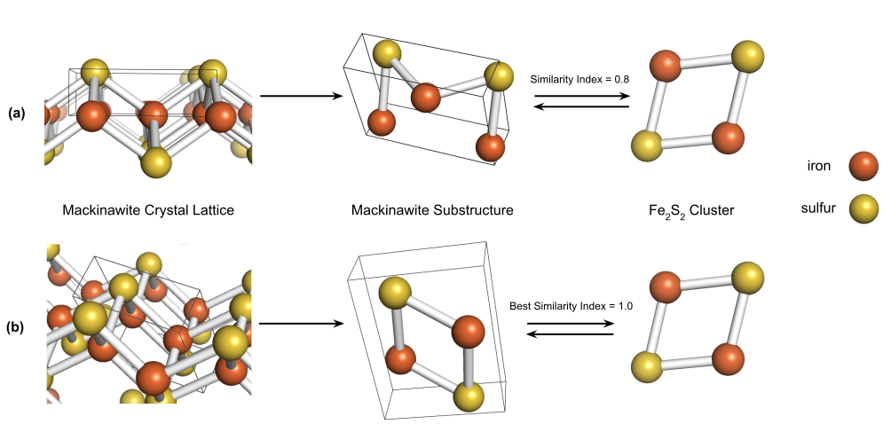

Quantifying Mineral-Ligand Structural Similarities: Bridging the Geological
World of Minerals with the Biological World of Enzymes
Life, 2020
We lay an analytical foundation for the large scale comparison of minerals and metalloenzyme ligands using chemoinformatics and molecular substructure search.